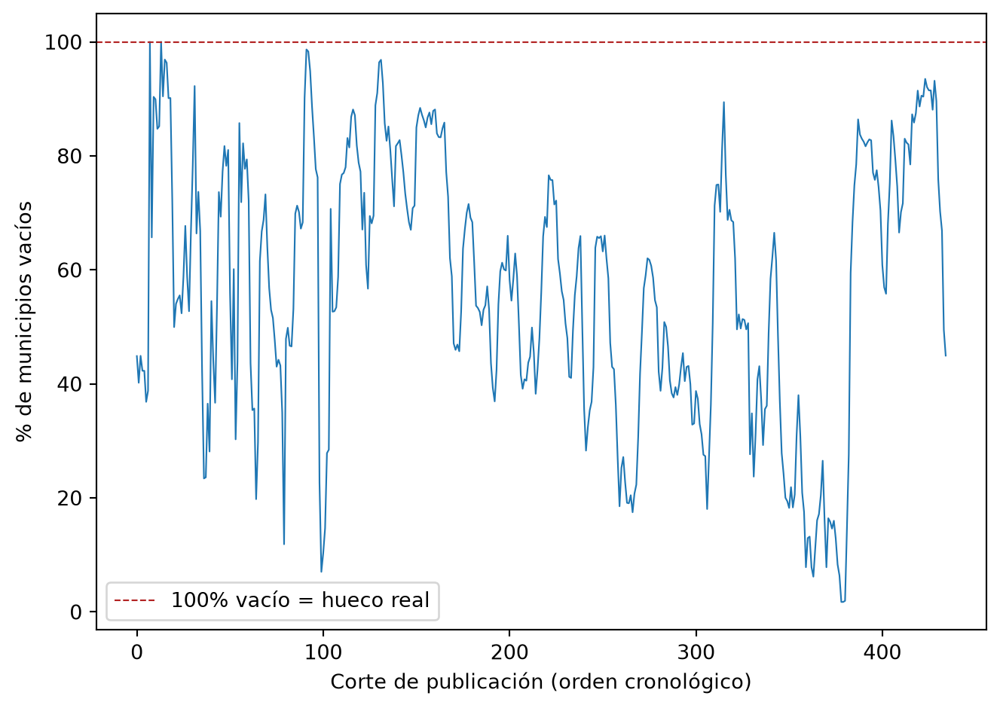

Esta sección documenta la exploración, limpieza y transformación de la fuente principal del proyecto: el Monitor de Sequía en México, publicado por el Programa Nacional Contra la Sequía (PRONACOSE). El archivo original (MunicipiosSequiaCSV.csv) viene en formato ancho: una fila por municipio y una columna por fecha de publicación del monitor, con la categoría de sequía observada (D0 a D4) o celda vacía.
El objetivo de esta etapa es dejar los datos en un formato largo (tidy), con una fila por combinación municipio–fecha, listo para el análisis exploratorio y el modelado de las siguientes secciones.
df = pd.read_csv(RUTA_DATOS, encoding="utf-8-sig", low_memory=False)df.columns = [c.strip() for c in df.columns]date_cols = [c for c in df.columns if c notin ID_COLS]n_municipios = df.shape[0]n_entidades = df["ENTIDAD"].nunique()n_fechas =len(date_cols)print(f"Municipios: {n_municipios:,}")print(f"Columnas de identificación: {len(ID_COLS)}")print(f"Columnas de fecha (periodos publicados): {n_fechas}")print(f"Entidades federativas: {n_entidades}")
Municipios: 2,478
Columnas de identificación: 9
Columnas de fecha (periodos publicados): 435
Entidades federativas: 32
El archivo cubre el total de municipios del país (ver salida de la celda anterior) distribuidos en las 32 entidades federativas, con más de 400 cortes de tiempo publicados por el monitor desde 2003.
Verificación de integridad
Antes de transformar, se verifica que las llaves de municipio sean únicas y que no existan valores faltantes en las columnas de identificación.
Code
duplicados = df["CVE_CONCATENADA"].duplicated().sum()nulos_id = df[ID_COLS].isna().sum().sum()print(f"Claves de municipio duplicadas: {duplicados}")print(f"Valores nulos en columnas de identificación: {nulos_id}")assert duplicados ==0, "Hay CVE_CONCATENADA duplicadas"assert nulos_id ==0, "Hay nulos en columnas de identificación"
Claves de municipio duplicadas: 0
Valores nulos en columnas de identificación: 0
No se encontraron duplicados ni valores faltantes en las llaves de municipio, entidad o cuenca.
Interpretación de celdas vacías: ¿sin sequía o dato faltante?
Este es el punto de limpieza más importante de la fuente. Una celda vacía puede significar dos cosas muy distintas:
Sin sequía en ese municipio durante ese periodo (la interpretación estándar de la metodología del Monitor de Sequía en México), o
Un hueco real de publicación: el monitor no se publicó ese corte para ningún municipio del país.
Para distinguirlos, se calcula el porcentaje de celdas vacías por columna (fecha): si una fecha tiene el 100% de los municipios vacíos, se trata como hueco real de publicación en vez de “sin sequía”.
Code
frac_vacio = df[date_cols].isna().mean()cols_missing_real = frac_vacio[frac_vacio ==1.0].index.tolist()fig, ax = plt.subplots()ax.plot(range(len(frac_vacio)), frac_vacio.values *100, linewidth=0.8)ax.set_xlabel("Corte de publicación (orden cronológico)")ax.set_ylabel("% de municipios vacíos")ax.axhline(100, color="firebrick", linestyle="--", linewidth=0.8, label="100% vacío = hueco real")ax.legend()plt.tight_layout()plt.show()print(f"Fechas con 100% de celdas vacías (hueco real de publicación): {cols_missing_real}")

Figure 1: Porcentaje de municipios sin categoría asignada, por fecha de publicación
Fechas con 100% de celdas vacías (hueco real de publicación): ['31-ago-03', '29-feb-04']
Las fechas listadas en la salida de la celda anterior (100% de municipios vacíos) se tratan como hueco real de publicación. El resto de las celdas vacías se codifican como “sin sequía”.
largo = df.melt(id_vars=ID_COLS, value_vars=date_cols, var_name="fecha_str", value_name="categoria")largo["fecha"] = largo["fecha_str"].map(parsear_fecha)largo["es_hueco_publicacion"] = largo["fecha_str"].isin(cols_missing_real)# Nivel ordinal de severidad (0-5); NaN real para huecos de publicaciónlargo["nivel_severidad"] = largo["categoria"].map(NIVEL_ORDINAL)largo.loc[largo["es_hueco_publicacion"], "nivel_severidad"] = np.nanlargo["categoria"] = largo["categoria"].fillna("Sin sequía")largo.loc[largo["es_hueco_publicacion"], "categoria"] = np.nan# Periodicidad de la fuente: mensual hasta 2013, quincenal desde 2014largo["periodicidad"] = np.where(largo["fecha"] < pd.Timestamp("2014-01-01"),"mensual", "quincenal")largo = (largo.drop(columns=["fecha_str"]) .sort_values(["CVE_CONCATENADA", "fecha"]) .reset_index(drop=True))display(largo.head())print(f"\nFilas en formato largo: {len(largo):,}")
CVE_CONCATENADA
CVE_ENT
CVE_MUN
NOMBRE_MUN
ENTIDAD
...
categoria
fecha
es_hueco_publicacion
nivel_severidad
periodicidad
0
1001
1
1
Aguascalientes
Aguascalientes
...
Sin sequía
2003-01-31
False
0.0
mensual
1
1001
1
1
Aguascalientes
Aguascalientes
...
Sin sequía
2003-02-28
False
0.0
mensual
2
1001
1
1
Aguascalientes
Aguascalientes
...
Sin sequía
2003-03-31
False
0.0
mensual
3
1001
1
1
Aguascalientes
Aguascalientes
...
Sin sequía
2003-04-30
False
0.0
mensual
4
1001
1
1
Aguascalientes
Aguascalientes
...
Sin sequía
2003-05-31
False
0.0
mensual
5 rows × 14 columns
Filas en formato largo: 1,077,930
NoteDecisión de limpieza: cambio de periodicidad
La fuente cambia de frecuencia mensual (2003–2013) a quincenal (2014 en adelante). Esto se documenta en la columna periodicidad y se conserva la resolución nativa en este dataset para el análisis de detalle 2014–2026. Para comparar tendencias a lo largo de todo el periodo 2003–2026 de forma consistente, en la siguiente sección se construye además una serie armonizada a frecuencia mensual.
Armonización a frecuencia mensual (comparabilidad 2003–2026)
Se colapsa cada municipio-mes tomando la severidad máxima observada en el mes (criterio de peor caso, estándar en climatología de sequías: reporta si el municipio estuvo en sequía en algún momento del mes).
Table 1: Distribución de categorías en la serie de resolución nativa
frecuencia
categoria
Sin sequía
607157
D0
252512
D1
125289
D2
57079
D3
25403
D4
5534
Guardado de datos limpios
Code
largo.to_parquet("../data/processed/sequia_long.parquet", index=False)mensual.drop(columns="anio").to_parquet("../data/processed/sequia_mensual.parquet", index=False)print("Archivos guardados en data/processed/")
Archivos guardados en data/processed/
Resumen de decisiones de limpieza
Llave de municipio (CVE_CONCATENADA): verificada como única, sin nulos en columnas de identificación.
Celda vacía → “sin sequía” (nivel ordinal 0), excepto en fechas donde el 100% de los municipios está vacío, tratadas como hueco real de publicación del monitor (NaN).
Formato ancho → largo: una fila por municipio–fecha.
Severidad ordinal D0–D4 codificada como 1–5, conservando también la etiqueta categórica original.
Cambio de periodicidad (mensual → quincenal en 2014) documentado explícitamente; se conserva la resolución nativa y además se construye una serie armonizada a mensual (peor caso del mes) para comparabilidad de tendencia en todo el periodo 2003–2026.
Con esto, data/processed/sequia_long.parquet y data/processed/sequia_mensual.parquet quedan listos como insumo para el análisis exploratorio (siguiente documento del proyecto).